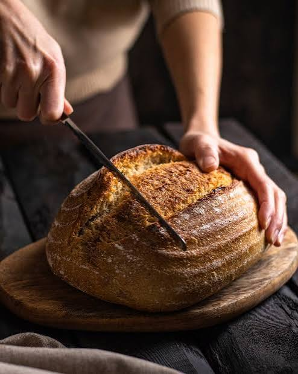

Recipe by Lauren Allen at https://tastesbetterfromscratch.com/bread-recipe/

what your bread will look like! public domain image from rawpixel.com
Rate This Recipe
Conversion
=
Ingredients You'll Need:
2 cups warm water (105-115 degrees), (474g)
1 Tablespoons active dry yeast
1/4 cup honey or sugar, (85g honey, 50g sugar)
2 teaspoons salt
2 Tablespoons oil (canola or vegetable), (30 ml)
4 - 5 1/2 cups all-purpose or bread flour*, (500g-688g)
Directions:
Prepare the dough: In a large bowl or stand mixer add the yeast, water and a pinch of the sugar or honey. Allow to rest for 5-10 minutes until foaming and bubbly. (This is called “proofing” the yeast, to make sure it is active. If it doesn’t foam, the yeast is no good, and you need to start over with fresh yeast).
Add remaining sugar or honey, salt, oil, and 3 cups of flour. Mix to combine.
Add another cup of flour and mix to combine. With the mixer running add more flour, ½ cup at a time, until the dough begins to pull away from the sides of the bowl. The dough should be smooth and elastic, and slightly stick to a clean finger, but not be overly sticky. Add a little more flour, if needed.
Mix the dough for 4-5 minutes on medium speed (or knead with your hands on a lightly floured surface, for 5-8 minutes).
Grease a large bowl with oil or cooking spray and place the dough inside, turning to coat. Cover with a dish towel or plastic wrap and allow to rise in a warm place* until doubled in size, about 1 ½ hours.
Spray two 9x5'' bread pans generously with cooking spray on all sides. (I also like to line the bottom of the pans with a small piece of parchment paper, but this is optional.)
Punch the dough down well to remove air bubbles. Divide into two equal portions. Shape each ball into long logs and place into greased loaf pans.
Cover pans with a lightweight, dry dish towel (or spray two pieces of plastic wrap generously with cooking spray and lay them gently over the pans). Allow dough to rise again for about 45 minutes to one hour, or until risen about 1 inch above the loaf pans. Gently removing covering.
Preheat oven to 350 F. Bake bread for about 30-33 minutes, or until golden brown on top. Give the top of a loaf a gentle tap; it should sound hollow.
Invert the loaves onto a wire cooling rack. Brush the tops with butter and allow to cool for at least 10 minutes before slicing.
Once cool, store in an airtight container or bag for 2-3 days at room temperature, or up to 5 days in the refrigerator.